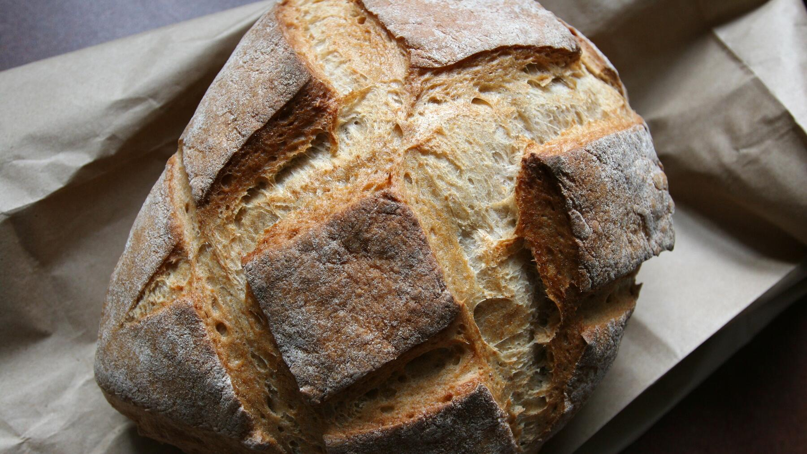

Sauerteig-Bauernbrot ohne Hefe
Großes, krustiges Bauernbrot aus Weizen- und Roggenmehl, das nur mit Sauerteig aufgeht. Gebacken im Dutch Oven. Eine Portion entspricht einem Brot.
- Zeit
- 1 Std. 15 Min.
- Schwierigkeit
- mittel
- Kategorie
- Brot & Brötchen
- Ernährung
- vegan
Zutaten
- 400 gWeizenmehl Type 405
- 200 gRoggenmehl Type 1150
- 85 gSauerteig-Starter (gekauft, oder eigener, siehe Tipp)
- 360 mlWasser, lauwarm (grobe Angabe)
- 12 gSalz (10–15 g nach Geschmack)
Zubereitung
- Weizen- und Roggenmehl in einer großen Schüssel mischen. Lauwarmes Wasser, den zerbröckelten Sauerteig-Starter und das Salz dazugeben und alles 7–10 Minuten kneten, bis ein gleichmäßig glatter Teig entsteht.
- Den Teig in der sauberen Schüssel mit einem Geschirrtuch abdecken und 5–6 Stunden bei Zimmertemperatur gehen lassen.
- Die Teigkugel auf eine Backmatte oder leicht bemehlte Arbeitsfläche geben und einige Male dehnen und falten: Den Teig immer wieder auseinanderziehen und die Seiten zusammenfalten. Zum Schluss zu einer glatten Kugel formen und in einen bemehlten oder mit Backpapier ausgelegten Gärkorb setzen.
- Noch einmal abgedeckt 5–7 Stunden gehen lassen. Den Backofen mit dem Dutch Oven samt Deckel auf 250 °C vorheizen. Die Teigkugel hineinstürzen oder mit dem Backpapier hineinheben.
- 10 Minuten mit Deckel backen. Dann die Hitze auf 210 °C reduzieren und weitere 25 Minuten backen. Den Deckel abnehmen und das Brot noch etwa 20 Minuten backen, bis es schön gebräunt, aber nicht zu dunkel ist und beim Klopfen hohl klingt.
Eigener Sauerteig: Mit eigenem Anstellgut statt des Starters etwa 90 g nehmen und je nach Konsistenz nur 330–340 ml Wasser. Bei jungem, noch nicht sehr triebstarkem Sauerteig zusätzlich eine kleine Menge Hefe verwenden. Siehe Sauerteig-Anstellgut ansetzen und füttern.
Zeitplan: 7 Uhr Teig ansetzen, 12 Uhr dehnen und falten und in den Gärkorb, 18 Uhr backen. Oder 17 Uhr ansetzen, 22 Uhr dehnen und falten und am nächsten Morgen gegen 6 Uhr backen.
Tipp: Zum Hineinstürzen den Teig mit der Naht nach oben ins Gärkörbchen legen, zum Hineinsetzen mit der Naht nach unten. Ohne Dutch Oven geht auch eine Springform oder freigeschoben, mit einer hitzebeständigen Schale Wasser auf dem Ofenboden. Die Kruste wird dann anders.
Hinweis: Die Zeit gilt ohne die Gehzeit von etwa 12 Stunden.